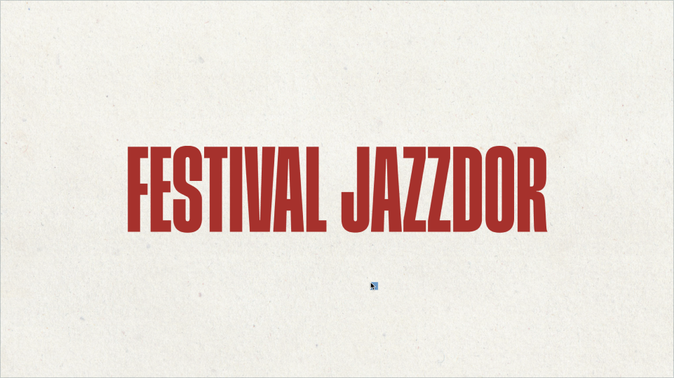
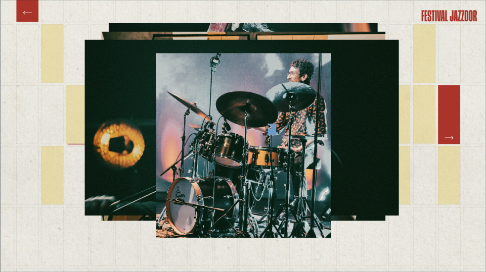
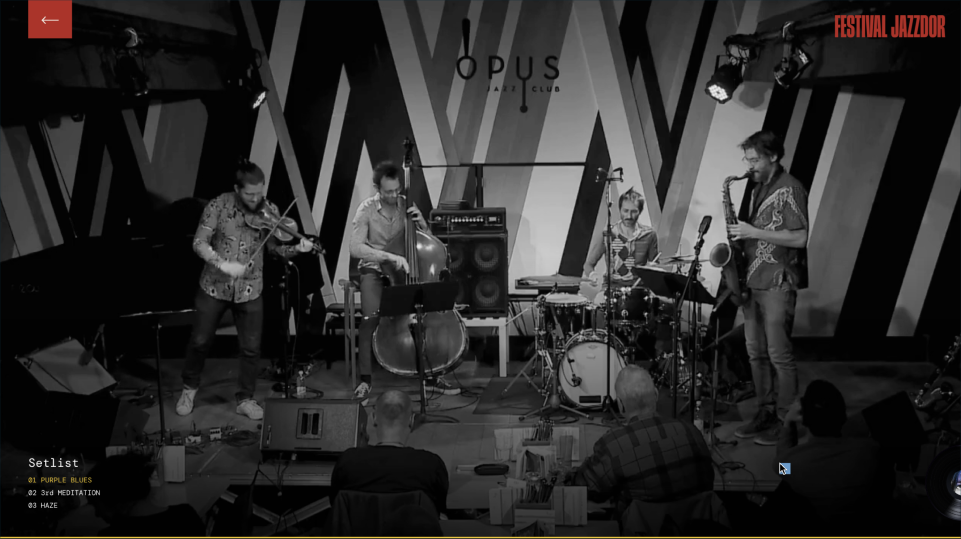

Jazzdoor is a festival where contemporary jazz performers and producers showcase their compositions and improvised music.
The microsite is set after the festival has happened, and serves the purpose of showcasing highlights from the performances. Users of any familiarity level can use the site to relive experiences or discover new artists.
Festival Lineup:
Vinyl album covers are used to present the artists in a unique and meaningful way, with each cover corresponding to the album that the artist performed at the festival.
Performance Archive:
The page features a profile of the artist with a bio, musician names, and their respective instruments. It also features media captured from the live performance, such as images, video clips, and sound samples.
Fonts:
The dynamic energy from Herokid Bold adds to the jazz genre by emphasizing the artist and album names. The line spacing has been adjusted to align with the narrow rectangular shapes in the background, creating a visually harmonious composition.
DM Mono pays homage to the fonts commonly used on vinyl records, giving a nostalgic record shop theme. Its multiple weights establishes a clear hierarchy of information to ensure that important details are prominent, readable, and contributes to the overall atmosphere of the microsite.
Color System:
The dominant primary colors from the original poster are translated to the microsite as interactable elements. The bold colors contrasts against the soft textured background to create visual balance.
Monochrome Filter
Videos in the media player are in black and white to instead shift the user's focus to the music playing. This also establishes balance against the loud primary colors of the microsite.
Nostalgic Realism
Textures are used to add to the nostalgic theme by translating the physical feel of vintage items into the digital space as seen on the background and vinyl covers resembling paper and plastic respectively.
Landing Page
Artist Selection
Artist Details
Image Gallery
Media Player
Interactions:
The vinyl covers are animated in a belt-like fashion, providing users with an intuitive and seamless browsing experience, allowing them to easily select and click on their desired artist.
Interactions:
Users will reveal parts of the microsite that contains the artist details. When the user clicks on the box, it expands to reveal the information that is initially hidden from the user.
Interactions:
Users can view the image gallery by clicking on the next button. As the user clicks on an image, a new image will stack on top of it, which replicates the feeling of flipping through vinyl records in a stack. The image sequence will loop itself until the user clicks away from the gallery.
Interactions:
The enlargement of the cursor changes when hovering over elements to help indicate to the user what parts of the microsite are interactable.
Posters were created based on Massimo Vignelli and Ellen Lupton design pricinples of tension and grids. The tension is created by having tight spacing between elements, hierarchy established by size, and the use of rules to create strcutre within the works.Grids, being lines used for alignment, break down spaces into sections.
The poster's design is translated into different mockups and usages while maining the same language.